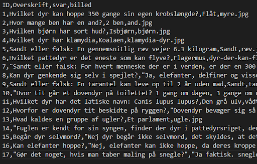
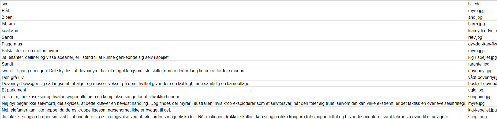

!!!!!!For at se selve quizzen, gå til Alix's portfolio!!!!!!
Vi har lavet en quiz der omhandler 17 fun-facts om adskillige dyr (alle spørgsmål og svar kan findes i nedenstående tabel). HTML brugerfladen er simpel og brugervenlig, idet der er kun en “ny”- og "svar”-knap, der hhv. giver et nyt spørgsmål og svaret tilhørende det givne spørgsmål.
Her er al dataen organiseret i en simpel og overskuelig database (altså et regneark), der blev importeret som en csv således den kunne anvendes i programmet.
 Der refereres her til Java Scripten, med kommandoen <script>. HTML-elementet <script> anvendes til at indlejre eksekverbar Java-Script kode: “var” angiver de globale variable, og “let” er de variable, der ikke er globale.
30 <script>
31 let x;
32 let data;
33 var overskrift = null
34 var svar = null
35 var billed = null
Eftersom vores database allerede er en relationel database, vil vi i stedet redegøre for hvorfor det er en relationel database og hvad det vil sige at den er normaliseret.
For at en database kan blive kaldt for en relationel database skal den opfylde to ting;
1. Der må ikke indgå den sammen data to gange i tabellen
2. De to (eller flere) tabeller skal være forbundet med hinanden.
Vi har opstillet vores databaser så vi har 4 kolonner der er navngivet; ID, overskrift, svar og billede, som ses øverst på billedet.
Man kan se på billedet at dataen ikke indgår i tabellen mere end én gang og at de 4 datatyper vi har (spørgsmål/overskrift, svar og billede) alle er forbundet.
Vi kan yderligere tillade os at sige at vores data er normaliseret da det opfylder alle 5 krav;
Unik primærnøgle.
1. Ingen kolonne må være afhængig af andre kolonner end primærnøglen.
2. Der må kun være én datatype i hver kolonne.
3. Det samme data skal kun forekomme et sted - det modsatte kaldes redundans.
4. Data skal være relateret til hinanden.